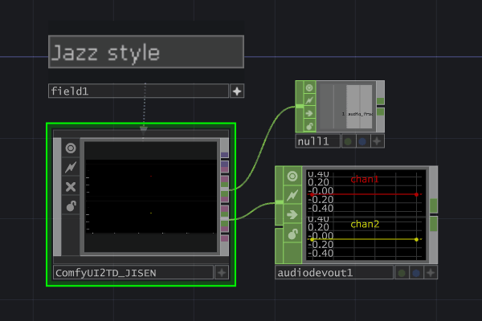

Real-time streaming from ComfyUI to TouchDesigner
ComfyUI-TD is designed for creators and developers who want to bridge AI generation workflows with real-time media systems.
It works together with ComfyUI2TD.tox and provides a more stable streaming experience through a rewritten WebSocket interface.

Supported data types

Image
Stream generated image results from ComfyUI into TouchDesigner.

Video
Transfer video outputs for real-time playback and visual systems.

Audio
Send generated or processed audio data into TouchDesigner workflows.

Point Cloud
Support traditional point cloud and 3D model transmission workflows.
Gaussian Splatting PLY
Work with Gaussian Splatting PLY data inside TouchDesigner pipelines.
ComfyUI2TD Ecosystem
Built to work together with the ComfyUI2TD.tox component.
Overview
ComfyUI-TD is a ComfyUI to TouchDesigner custom node for real-time streaming of generated data.
- Images
- Videos
- Audio
- Traditional PLY point clouds
- Gaussian Splatting PLY
User Notice
- Some nodes are ported and optimized from ComfyUI-Tooling-Nodes.
- ComfyUI-TD must be used with
ComfyUI2TD.tox. - Please update
ComfyUI2TD.toxtov_5.1.xor higher. - This version includes a full code refactor with video and 3D model transmission support.
- The WebSocket interface was rewritten to improve data return reliability in poor network conditions.
- From
v_5.1.x, preset workflows no longer depend on ComfyUI-Tooling-Nodes.
Video Tutorials
Please watch the following videos in order. Tutorial videos are in Chinese.
- ComfyUI2TD_v5.1 New Version Tutorial Must Watch (Bilibili)
- ComfyUI2TD Basic Tutorial (Bilibili)
- Cloud Deployment ComfyUI Xiangongyun Tutorial (Bilibili)
Cloud Deployment
If you need cloud-based ComfyUI, Xiangongyun servers are available and the matching image is ready.
This helps when your ComfyUI runs remotely and TouchDesigner receives streamed data over the network.
Installation
Method 1: Manager Installation
Use ComfyUI-Manager to search for ComfyUI-TD and install it directly.
Method 2: Manual Installation
Download and unzip this project into:
X:\ComfyUI_windows_portable\ComfyUI\custom_nodes
Method 3: Git Clone
cd custom_nodes
git clone https://github.com/JiSenHua/ComfyUI-TD.gitMethod 4: Injection Installation
Use the InjectFile function together with ComfyUI2TD.tox
to inject nodes automatically into:
X:\ComfyUI_windows_portable\ComfyUI\custom_nodes
Project Links
- Repository: https://github.com/JiSenHua/ComfyUI-TD
- GitHub Pages: https://jisenhua.github.io/ComfyUI-TD/
- Chinese README: https://github.com/JiSenHua/ComfyUI-TD/blob/main/README_zh.md
Thanks
The legacy ComfyUI2TD.tox component was developed based on the TDComfyUI project.
Thanks to olegchomp.
将 ComfyUI 生成结果实时传输到 TouchDesigner
ComfyUI-TD 面向希望将 AI 生成工作流接入实时媒体系统的创作者与开发者。
它需要配合 ComfyUI2TD.tox 使用，并通过重写后的 WebSocket 接口提供更稳定的数据传输体验。
支持的数据类型
图像
将 ComfyUI 生成的图像结果实时传输到 TouchDesigner。
视频
传输视频输出，用于实时播放和视觉系统。
音频
将生成或处理后的音频数据发送到 TouchDesigner 工作流。
点云
支持传统点云与 3D 模型数据传输流程。
Gaussian Splatting PLY
支持在 TouchDesigner 流程中使用 Gaussian Splatting PLY 数据。
ComfyUI2TD 生态
与 ComfyUI2TD.tox 组件配合工作而设计。
项目简介
ComfyUI-TD 是一个 ComfyUI 到 TouchDesigner 的自定义节点，用于实时传输生成数据。
- 图像
- 视频
- 音频
- 传统 PLY 点云
- Gaussian Splatting PLY
用户须知
- 部分节点基于 ComfyUI-Tooling-Nodes 进行了移植和优化。
- ComfyUI-TD 必须与
ComfyUI2TD.tox一起使用。 - 请将
ComfyUI2TD.tox更新到v_5.1.x或更高版本。 - 当前版本进行了完整代码重构，支持视频和 3D 模型数据传输。
- WebSocket 接口已重写，可改善云端弱网络条件下的数据返回稳定性。
- 从
v_5.1.x开始，预设工作流不再依赖 ComfyUI-Tooling-Nodes。
视频教程
请按顺序观看以下视频，教程为中文。
- ComfyUI2TD_v5.1 新版本教程（必看，Bilibili）
- ComfyUI2TD 基础教程（Bilibili）
- ComfyUI 云端部署仙宫云教程（Bilibili）
云端部署
如果你需要使用云端 ComfyUI，可以选择仙宫云服务器，对应镜像已经准备好。
适用于远程运行 ComfyUI 并将生成数据通过网络实时回传到 TouchDesigner 的场景。
安装方式
方式 1：Manager 安装
使用 ComfyUI-Manager 搜索 ComfyUI-TD 并直接安装。
方式 2：手动安装
下载并解压本项目到：
X:\ComfyUI_windows_portable\ComfyUI\custom_nodes
方式 3：Git Clone
cd custom_nodes
git clone https://github.com/JiSenHua/ComfyUI-TD.git方式 4：注入安装
配合 ComfyUI2TD.tox 组件，使用 InjectFile 功能自动将节点注入到：
X:\ComfyUI_windows_portable\ComfyUI\custom_nodes
项目链接
致谢
旧版 ComfyUI2TD.tox 组件基于 TDComfyUI 项目开发，感谢 olegchomp。